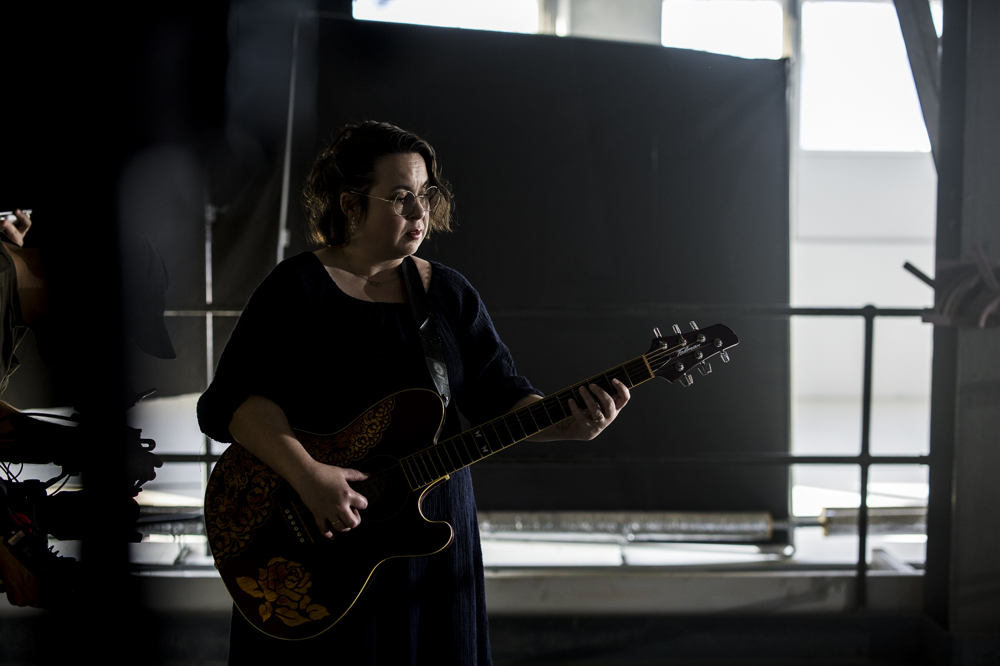
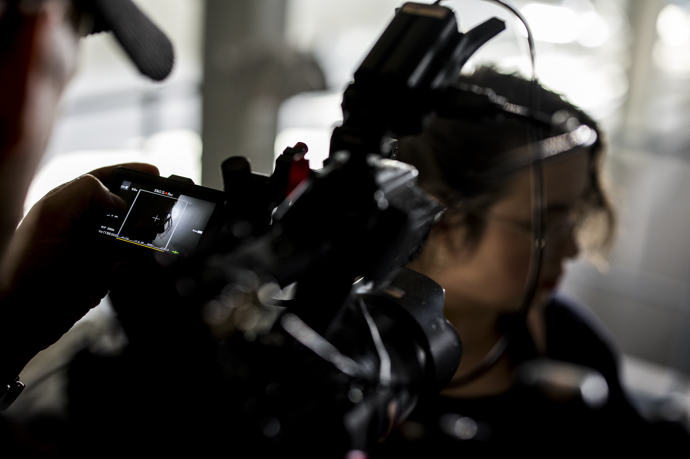
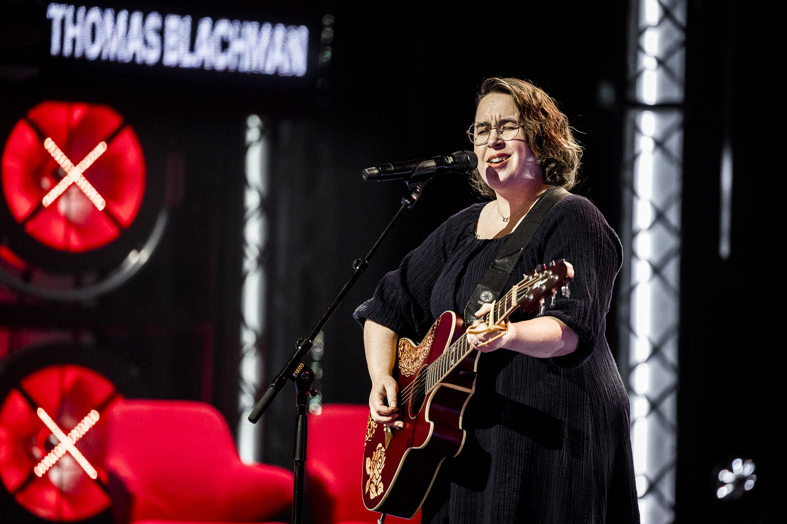
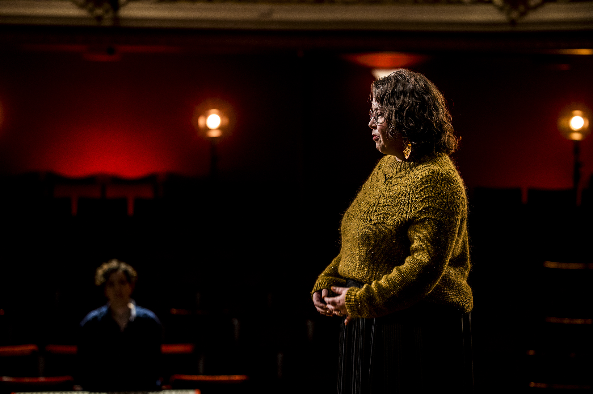
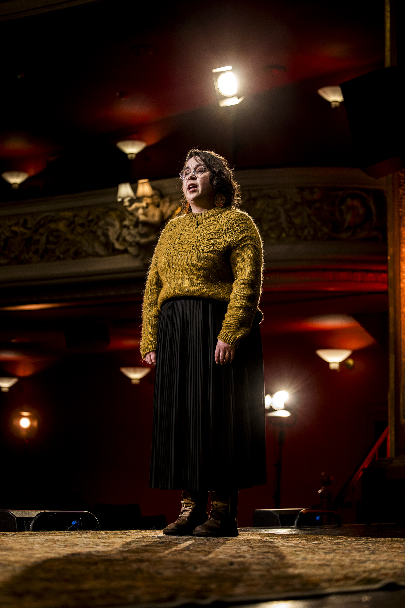
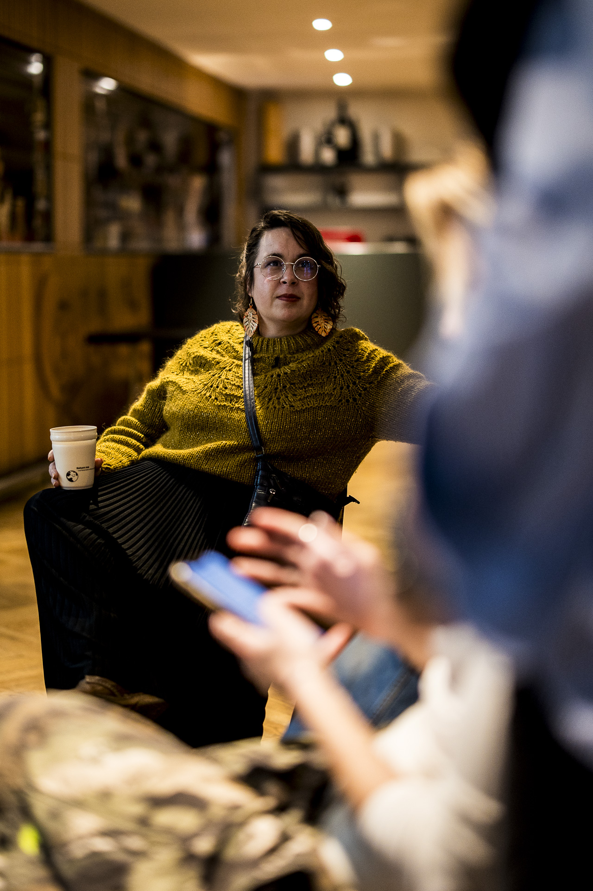
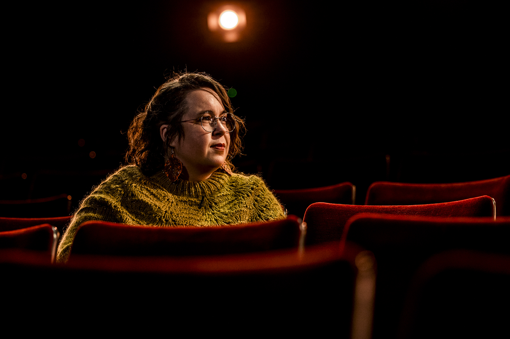
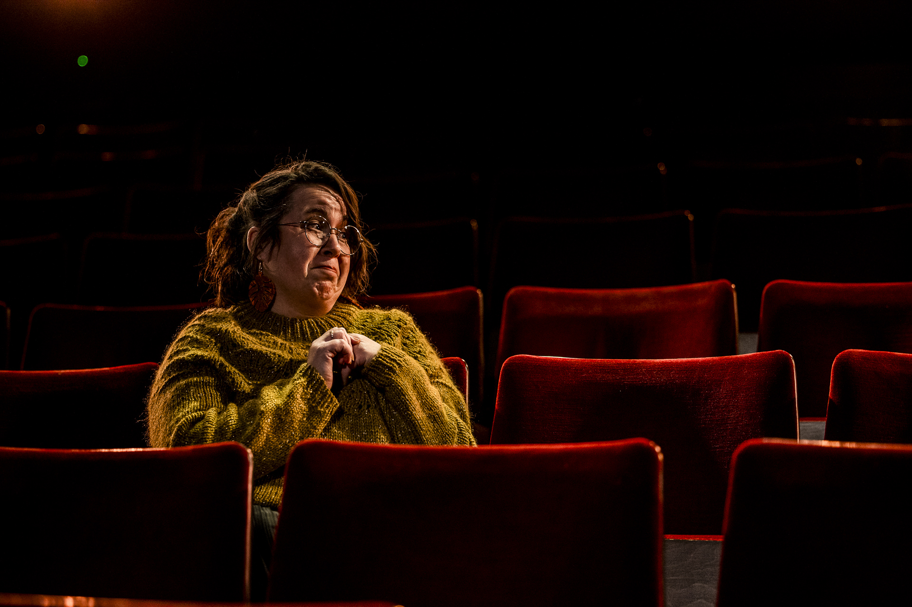
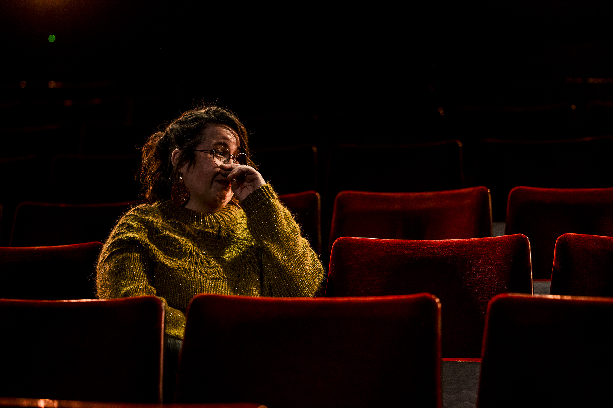
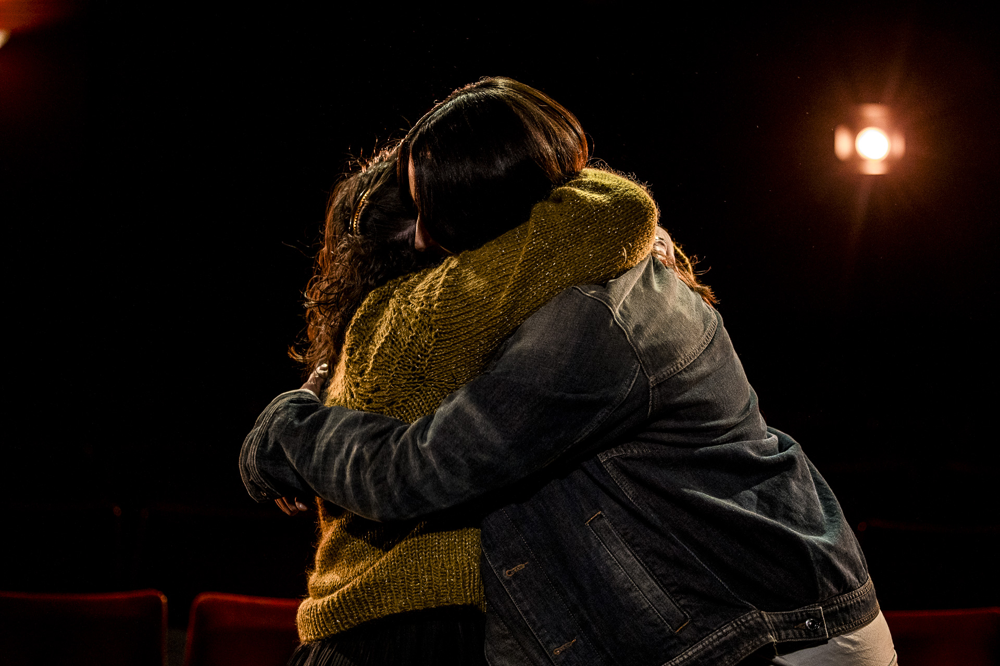

I 2026 bragte MLI den svenske folkemusik og den nordiske visetradition ind i dansk primetime-tv som deltager i X Factor Danmark — sæson 19 på TV 2.
X Factor 2026
MLI (Emelie Blomgren) deltager i X Factor Danmark 2026 i +23 kategorien under mentor Drew Sycamore. Med sin unikke blanding af svensk folkemusik, middelaldersballader og nordisk sjæl har MLI bragt noget helt anderledes til konkurrencen.
Fra audition til bootcamp i Svendborg og videre til de direkte shows fra den 27. februar 2026 har MLI vist, at folkemusik ikke bare hører hjemme på vikingemarkeder og i visestuer — den har en kraft og en relevans der kan fylde den største scene.
Rejsen i X Factor
X Factor-rejsen har været en platform for MLI til at nå et helt nyt publikum med den nordiske musiktradition. Dommerpanelet — Thomas Blachman, Benjamin Hav og Drew Sycamore — har anerkendt den autenticitet og det mod, der kræves for at stå på scenen med folkeviser i et format domineret af pop og mainstream.
Live-showene markerer kulminationen på en intensiv rejse, der begyndte med 36 deltagere i bootcamp, blev snævret ind til 18, og derefter til de 9 finalister der kæmper om titlen.
















